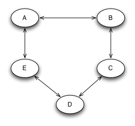
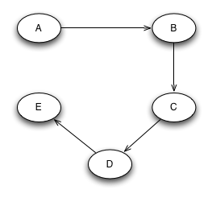

Deadlock#
Deadlock occurs when two or more threads are each waiting for resources held by another thread in the same waiting cycle. Once the cycle forms, the threads cannot make progress unless something external breaks the cycle.
Deadlock may not happen immediately in a program that contains the conditions for it. The bug may depend on timing, scheduling, input, or the order in which threads reach the locks.
Dining Philosophers Problem#
The dining philosophers problem is a small model of resource contention. Each philosopher alternates between thinking and eating, and each needs two forks to eat.
The usual rules are:
A philosopher can be eating or thinking.
Philosophers do not communicate with each other.
A philosopher needs both the left fork and the right fork before eating.
Each fork can be held by only one philosopher at a time.
Dining Philosophers Deadlock Scenario#
A deadlock can occur if every philosopher picks up one fork and then waits for the other fork.
eat() {
pick up right fork;
pick up left fork;
proceed with eating;
}
One possible execution is:
At
t = 0, every philosopher picks up the fork on the right.At
t = 1, philosopher 1 tries to pick up the left fork, but philosopher 5 holds it.At
t = 2, philosopher 2 tries to pick up the left fork, but philosopher 1 holds it.The same pattern continues around the table.
Every philosopher holds one fork and waits for a fork held by another philosopher. No philosopher can finish eating and release a fork, so the program is deadlocked.
Dining Philosophers Lock Graph#
A lock graph shows the possible ordering relationships among locks. If the graph contains a cycle, a deadlock is possible.
In the first dining philosophers algorithm, forks can be acquired in an order that forms a cycle.
{kind=link}

Avoiding Deadlock with Try-and-Release#
One way to avoid deadlock is to acquire both needed resources as a single logical operation. If the second resource is not available, the thread releases the first resource and tries again later.
eat() {
while(does not have both forks) {
pickup left fork;
if(can pick up right fork) {
pick up right fork;
} else {
put down left fork;
}
}
proceed with eating;
}
This avoids the deadlock cycle because a philosopher does not continue holding one fork while waiting forever for the other fork. The tradeoff is that the implementation is more complex and can still need fairness rules to avoid starvation or livelock.
Avoiding Deadlock with Lock Ordering#
Another way to avoid deadlock is to assign a global order to resources and require every thread to acquire resources in that order.
eat() {
pick up fork with lower number;
pick up fork with higher number;
proceed with eating;
}
This works because a global order removes cycles from the lock graph. If all threads acquire the lower-numbered lock before the higher-numbered lock, no thread can create a circular wait.
{kind=link}

Dijkstra’s Solution and the Banker’s Algorithm#
Dijkstra’s solution to the dining philosophers problem uses resource ordering. The same basic idea appears in the Banker’s algorithm: do not enter a resource allocation state that can lead to deadlock.
The main advantage is simplicity. Lock ordering is easy to state, easy to review, and often easy to implement. A common approach is to lock mutexes in address order or in the order they appear in a table.
The main disadvantage is reduced concurrency. Some lock acquisition orders would be safe in a specific execution, but a strict global order forbids them anyway.
Deadlock Avoidance Implementation#
Deadlock avoidance prevents unsafe lock acquisition by enforcing a consistent order.
typedef struct {
int LockNumber;
void* LockObject;
} lock;
void multi_lock(lock* locks, int count) {
sort(locks, count);
for(int i = 0; i < count; i++) {
lock(locks[i]);
}
}
The important part is not the sorting function itself. The important part is that every caller uses the same ordering rule before acquiring more than one lock.
Deadlock Prevention Implementation#
Deadlock prevention can also be done by acquiring locks with a try-and-release rule. If any lock cannot be acquired, the thread releases what it already holds and tries again.
typedef struct {
int LockNumber;
void* LockObject;
} lock;
void multi_lock(lock* locks, int count) {
while(1) {
int i = 0;
for(i = 0; i < count; i++) {
if(!try_lock(locks[i])) {
for(int j = 0; j < i; j++) {
unlock(locks[j]);
}
break;
}
}
if(i == count) {
return;
}
}
}
This approach can allow more concurrency than strict ordering, but it can also be harder to reason about. Without backoff or fairness, two threads can repeatedly interfere with each other.
Dining Philosophers Example#
The systems-code-examples/dining-philosophers example can run with
or without resource ordering. The default mode can deadlock. The
DINING_POLICY=avoid_deadlock mode reorders forks to avoid the cycle.
1#include <pthread.h>
2#include <stdio.h>
3#include <stdlib.h>
4#include <unistd.h>
5
6#include "diners.h"
7#include "millisleep.h"
8
9#include <stdio.h>
10#include <stdlib.h>
11#include <unistd.h>
12
13#define MAX_DINERS 5
14#define MAX_THINK_TIME 7
15#define MAX_EAT_TIME 7
16#define MAIN_THREAD_SLEEP_TIME 51
17
18typedef struct {
19 int num_philosophers;
20 int think_time;
21 int eat_time;
22 int enumerate_resources;
23} Configuration;
24
25void parseCommandLine(int argc, char **argv, Configuration *config) {
26 int opt;
27
28 while ((opt = getopt(argc, argv, "n:t:e:r")) != -1) {
29 switch (opt) {
30 case 'n': // Number of philosophers
31 config->num_philosophers = atoi(optarg);
32 if (config->num_philosophers > MAX_DINERS || config->num_philosophers < 1) {
33 fprintf(stderr, "Number of philosophers must be between 1 and %d\n", MAX_DINERS);
34 exit(EXIT_FAILURE);
35 }
36 break;
37 case 't': // Think time
38 config->think_time = atoi(optarg);
39 if (config->think_time > MAX_THINK_TIME || config->think_time < 0) {
40 fprintf(stderr, "Think time must be between 0 and %d seconds\n", MAX_THINK_TIME);
41 exit(EXIT_FAILURE);
42 }
43 break;
44 case 'e': // Eat time
45 config->eat_time = atoi(optarg);
46 if (config->eat_time > MAX_EAT_TIME || config->eat_time < 0) {
47 fprintf(stderr, "Eat time must be between 0 and %d seconds\n", MAX_EAT_TIME);
48 exit(EXIT_FAILURE);
49 }
50 break;
51 case 'r': // Enumerate resources
52 config->enumerate_resources = 1;
53 break;
54 default: /* '?' */
55 fprintf(stderr, "Usage: %s [-n num_philosophers] [-t think_time] [-e eat_time] [-r]\n",
56 argv[0]);
57 exit(EXIT_FAILURE);
58 }
59 }
60}
61
62int main(int argc, char **argv) {
63 Configuration config = {
64 .num_philosophers = 5, // default number of philosophers
65 .think_time = 2, // default think time in seconds
66 .eat_time = 3, // default eat time in seconds
67 .enumerate_resources = 0 // default for resource enumeration: off
68 };
69
70 parseCommandLine(argc, argv, &config);
71
72 printf("Number of Philosophers: %d\n", config.num_philosophers);
73 printf("Think Time: %d seconds\n", config.think_time);
74 printf("Eat Time: %d seconds\n", config.eat_time);
75 printf("Enumerate Resources: %s\n", config.enumerate_resources ? "Yes" : "No");
76
77 fork_t fork[MAX_DINERS];
78 diner_t diner[MAX_DINERS];
79
80 /* The main thread */
81 pthread_t this_thread = pthread_self();
82 struct sched_param sched_parameters;
83 sched_parameters.sched_priority = sched_get_priority_max(SCHED_OTHER);
84 int status = pthread_setschedparam(this_thread, SCHED_OTHER, &sched_parameters);
85
86 // the main thread monitors the state of the diners and runs at highest
87 // priority so it can continue doing something, even if (or when) the other
88 // threads get deadlocked.
89
90 if (status != 0)
91 {
92 fprintf(stderr, "Cannot set main thread max prioirty. Fatal.\n");
93 exit(1);
94 }
95
96 /* initialize the shared resources (forks) */
97 for (int i = 0; i < MAX_DINERS; i++)
98 fork_init(&fork[i], i);
99
100 /* initialize the diners to link to the shared resources (forks) */
101 for (int i = 0; i < MAX_DINERS; i++)
102 {
103 int id1 = i;
104 int id2 = (i + 1) % MAX_DINERS;
105 if (get_dining_policy() == FORK_REORDERING && id1 > id2)
106 {
107 printf("Reordered forks %d and %d\n", id1, id2);
108 diner_init(&diner[i], i, &fork[id2], &fork[id1]);
109 }
110 else
111 {
112 diner_init(&diner[i], i, &fork[id1], &fork[id2]);
113 }
114 }
115
116 /* start the actual threads for each diner */
117 for (int i = 0; i < MAX_DINERS; i++)
118 {
119 printf("Creating thread %d", i);
120 diner_start(&diner[i]);
121 }
122
123 /* monitor the state of the diners in the main (highest-priority) thread
124 * because it is high priority, it must sleep for a short time to give
125 * the diner threads a chance to do their thing.
126 */
127 int go_on = 1;
128 while (go_on)
129 {
130 for (int i = 0; i < MAX_DINERS; i++)
131 {
132 putchar(diner[i].state);
133 }
134 putchar('\n');
135 go_on = 0;
136 for (int i = 0; i < MAX_DINERS; i++)
137 {
138 go_on |= diner[i].state != 'd';
139 }
140 millisecond_sleep(MAIN_THREAD_SLEEP_TIME);
141 }
142
143 /* assuming no deadlock happened, this code will be reached so we
144 * can join with the main thread
145 */
146
147 for (int i=0; i < MAX_DINERS; i++)
148 {
149 diner_await(&diner[i]);
150 printf("Diner id %c exited normally; state = %c\n", diner[i].id, diner[i].state);
151 }
152
153 /* locks associated with forks need to be cleaned up */
154 for (int i = 0; i < MAX_DINERS; i++)
155 fork_free_resources(&fork[i]);
156
157 /* attribute object should also be freed (could do earlier, too) */
158 //pthread_attr_destroy(&attr);
159}
Key points:
The program creates five shared
fork_tobjects and fivediner_tobjects.Each diner receives pointers to the two forks it needs.
The default order gives each diner its normal left and right fork.
When the policy is
avoid_deadlock, the program reorders the fork pointers so each diner follows the same resource order.The main thread prints each diner’s state so deadlock can be observed.
1//
2// Created by gkt on 10/16/20.
3//
4
5#include <string.h>
6#include <stdlib.h>
7#include <pthread.h>
8
9#include "diners.h"
10#include "millisleep.h"
11
12void fork_init(fork_t *fork, int value)
13{
14 fork->id = '0' + value;
15 pthread_mutex_init(&fork->lock, NULL);
16}
17
18void fork_pickup(fork_t *fork)
19{
20 pthread_mutex_lock(&fork->lock);
21}
22
23void fork_putdown(fork_t *fork)
24{
25 pthread_mutex_unlock(&fork->lock);
26}
27
28void fork_free_resources(fork_t *fork)
29{
30 pthread_mutex_destroy(&fork->lock);
31}
32
33void diner_init(diner_t *diner, int id, fork_t *left, fork_t *right)
34{
35 diner->id = '0' + id;
36 diner->state = 't';
37 diner->left = left;
38 diner->right = right;
39}
40
41void diner_start(diner_t *diner)
42{
43 pthread_attr_t attr;
44
45 pthread_attr_init(&attr);
46 pthread_attr_setdetachstate(&attr, PTHREAD_CREATE_JOINABLE);
47 pthread_create(&diner->thread, &attr, diner_run, (void *)diner);
48 pthread_attr_destroy(&attr);
49}
50
51void diner_await(diner_t *diner)
52{
53 void *result;
54 pthread_join(diner->thread, &result);
55}
56
57void diner_think(diner_t *diner)
58{
59 diner->state = 't';
60 millisecond_sleep(rand() % MAX_THINK_TIME);
61}
62
63void diner_eat(diner_t *diner)
64{
65 diner->state = 'e';
66 millisecond_sleep(rand() % MAX_EAT_TIME);
67}
68
69void *diner_run(void *tsd) /* tsd should be the diner object */
70{
71 diner_t *diner = (diner_t *) tsd;
72
73 for (int i = 0; i < 1000; i++)
74 {
75
76 diner_think(diner);
77 diner->state = diner->left->id;
78 millisecond_sleep(1);
79 fork_pickup(diner->left);
80 diner->state = diner->right->id;
81 millisecond_sleep(1);
82 fork_pickup(diner->right);
83 diner_eat(diner);
84 fork_putdown(diner->left);
85 fork_putdown(diner->right);
86 }
87 diner->state = 'd';
88 pthread_exit(diner);
89}
90
91enum dining_policy_t get_dining_policy()
92{
93 char *dining_policy = getenv("DINING_POLICY");
94 if (dining_policy == NULL)
95 return NO_FORK_REORDERING;
96
97 if (strcmp(dining_policy, "avoid_deadlock") == 0)
98 return FORK_REORDERING;
99
100 return NO_FORK_REORDERING;
101}
Key points:
Each fork is protected by a
pthread_mutex_t.fork_pickup()locks the fork mutex, andfork_putdown()unlocks it.diner_run()repeatedly thinks, picks up the left fork, picks up the right fork, eats, and releases both forks.The short sleep between fork acquisitions makes the deadlock easier to reproduce.
get_dining_policy()reads the environment variable that selects the deadlock-avoidance policy.
1//
2// Created by gkt on 10/16/20.
3//
4
5#ifndef DINERS_H
6#define DINERS_H
7
8#define MAX_DINERS 5
9#define MAX_THINK_TIME 7
10#define MAX_EAT_TIME 7
11#define MAIN_THREAD_SLEEP_TIME 51
12
13typedef struct
14{
15 char id;
16 pthread_mutex_t lock;
17} fork_t;
18
19typedef struct
20{
21 char id;
22 char state;
23 fork_t *left;
24 fork_t *right;
25 pthread_t thread;
26} diner_t;
27
28extern void fork_init(fork_t *fork, int value);
29
30extern void fork_pickup(fork_t *fork);
31
32extern void fork_putdown(fork_t *fork);
33
34extern void fork_free_resources(fork_t *fork);
35
36extern void diner_init(diner_t *diner, int id, fork_t *left, fork_t *right);
37
38extern void diner_think(diner_t *diner);
39
40extern void diner_eat(diner_t *diner);
41
42extern void diner_start(diner_t *diner);
43
44extern void diner_await(diner_t *diner);
45
46extern void *diner_run(void *tsd);
47
48enum dining_policy_t
49{
50 NO_FORK_REORDERING, FORK_REORDERING
51};
52
53extern enum dining_policy_t get_dining_policy();
54
55#endif //DINERS_DININGPHILOSOPHERS_H
Key points:
fork_tstores the fork id and the mutex protecting that fork.diner_tstores the diner id, current state, fork pointers, and pthread handle.The
dining_policy_tenum records whether fork reordering is active.The header separates the shared data model from the implementation in
diners.c.
Example of Deadlock in Nested Calls#
Deadlock can be harder to see when locks are acquired through nested method calls.
void method1() {
a.lock();
method2();
a.unlock();
}
void method2() {
b.lock();
c.lock();
b.unlock();
c.unlock();
}
void method3() {
c.lock();
method2();
method4();
c.unlock();
}
void method4() {
d.lock();
d.unlock();
}
Here, method3() locks c and then calls method2(), which tries
to lock c again after locking b. Depending on the lock type and
the rest of the program, this can produce self-deadlock or contribute to
a larger lock-ordering cycle.
Multi-Lock Solutions in Windows#
Windows provides WaitForMultipleObjects() for waiting on multiple
kernel objects.
The objects can include events, mutexes, semaphores, timers, and other waitable handles. This gives Windows programs a system-level way to wait for one or more synchronization objects.
Multi-Lock Solutions in Linux and Minix#
Linux and Minix do not provide a general multi-lock operation for normal pthread mutexes.
The usual guidance is to avoid multi-locking when possible. When multiple locks are necessary, use a consistent ordering rule. For shared-memory semaphores, virtual address order is not reliable across processes, so the order should come from a shared table, array index, or explicit lock number.
Deadlock with Correct Lock Ordering#
Lock ordering prevents circular wait, but it does not prevent every way a program can stop making progress.
A thread can still lock a resource and fail to release it. Common causes include missing unlock calls, crashes while holding a lock, infinite loops inside critical sections, and monitor conditions that never become true. These failures are often harder to handle because the lock order may be correct while the program state is not.
Starvation#
Starvation occurs when one or more threads wait indefinitely because other threads keep getting access to the resource first.
Starvation is closely related to scheduling fairness. A program can avoid deadlock and still be unfair enough that one thread makes little or no progress.
Starvation Example#
This example holds a lock while performing blocking I/O. That can make other threads wait much longer than necessary.
Queue _queue = new Queue();
Mutex _mutex = new Mutex();
void add() {
int value = 0;
while(1) {
_mutex->Lock();
while(_queue->count() > 0) {
value += _queue->Dequeue();
printf("current value = %d\n", value);
}
_mutex->Unlock();
}
}
void read_values() {
while(1) {
int value = 0;
_mutex->Lock();
scanf("%d\n", &value);
_queue->Enqueue(value);
_mutex->Unlock();
}
}
The first thread holds the lock while calling printf(). The second
thread holds the lock while calling scanf(). Both operations can
block, and while either one blocks the other thread cannot enter the
critical section.
Reducing Starvation#
One simple improvement is to keep blocking I/O outside the critical section.
Queue _queue = new Queue();
Mutex _mutex = new Mutex();
void add() {
int value = 0;
while(1) {
_mutex->Lock();
while(_queue->count() > 0) {
value += _queue->Dequeue();
_mutex->Unlock();
printf("current value = %d\n", value);
_mutex->Lock();
}
_mutex->Unlock();
}
}
void read_values() {
while(1) {
int value = 0;
scanf("%d\n", &value);
_mutex->Lock();
_queue->Enqueue(value);
_mutex->Unlock();
}
}
This version does not hold the lock during printf() or scanf().
The critical section is shorter, and the average wait time for the lock
is reduced.
Guidelines to Avoid Starvation#
Starvation is less likely when locks are held for short, predictable periods.
Useful guidelines include:
Keep critical sections short.
Avoid blocking I/O while holding a lock.
If a computation is long-running, design it so the lock can be released periodically.
Copy the needed data while holding the lock, then do expensive work after releasing it.
Use synchronization libraries that provide fairness guarantees when fairness matters.
Livelock#
Livelock occurs when threads keep running but repeatedly take actions that prevent progress.
It can happen in deadlock-avoidance code when two threads both release and retry at the same time.
void thread1() {
while(1) {
a.lock();
if(b.trylock()) {
/* do work */
b.unlock();
}
a.unlock();
}
}
void thread2() {
while(1) {
b.lock();
if(a.trylock()) {
/* do work */
a.unlock();
}
b.unlock();
}
}
One possible sequence is:
thread1locksa.thread2locksband fails to locka.thread1fails to lockband releasesa.thread2releasesb.
If the pattern repeats, both threads continue executing but neither completes the protected work. Backoff, ordering, or a coordinator can break the livelock.
Lock Fairness#
Lock fairness means that threads waiting for a lock have similar average wait times.
Fair locks can reduce starvation and make execution more predictable. Common approaches include FIFO wait queues and, less commonly, schedulers that use timing history.
Fairness Tradeoffs#
Fairness has a cost because selecting the next owner of a lock is not the same as immediately running that thread.
A fair lock can reduce throughput when a thread repeatedly locks and unlocks a short critical section. An unfair lock may let the same thread reacquire the lock quickly, which can improve locality and throughput but can also starve other threads.